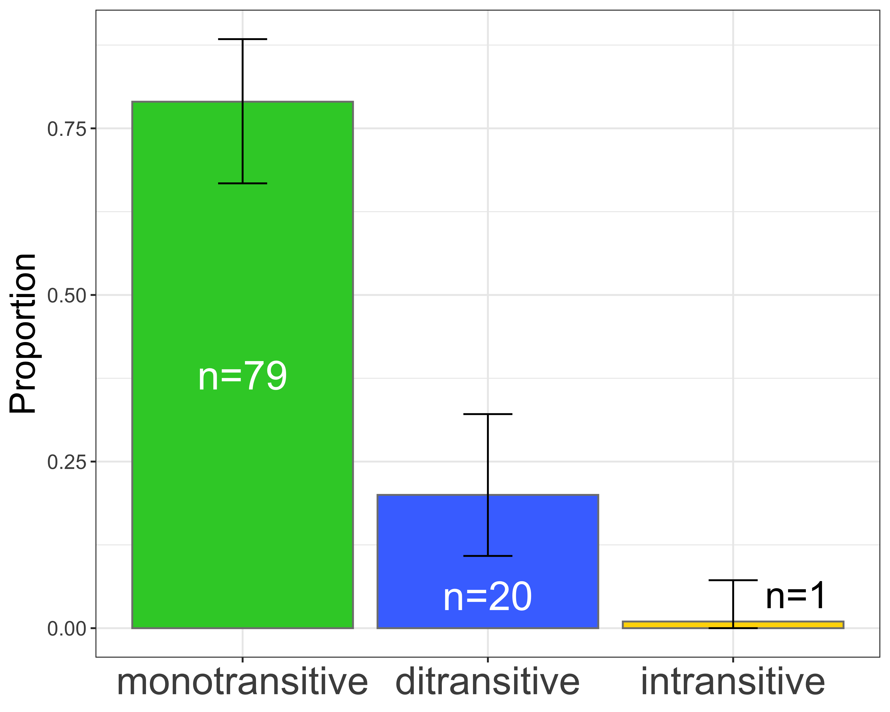
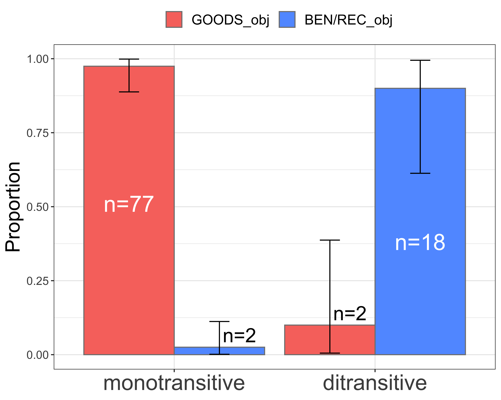

# load packages =====
library(tidyverse)
library(readxl)
library(vcd)
library(EMT)
library(knitr)
library(ggpubr)
library(rstatix)R Notebook for the paper on applicative construction of Indonesian BUY-verb in NUSA special issue on applicatives
Gede Primahadi Wijaya Rajeg ![]()
I Wayan Arka
Preparation
Below is the code to load the corpus size table.
# load the corpus size table
# corpussize <- tibble::as_tibble(read.table(file = "/Volumes/GoogleDrive/Other computers/My MacBook Pro/Documents/Corpora/_corpusindo/Leipzig Corpora/corpus_total_size_per_file.txt", header = TRUE, sep = "\t", comment.char = "", quote = "")[-c(1, 13, 15), ])
# readr::write_tsv(corpussize, "../data/corpussize.txt")
corpussize <- readr::read_tsv("../data/corpussize.txt")The total size (in word-tokens) for the corpus is 119,557,093 tokens.
Below is the code to read-in the spreadsheet containing the annotated concordance data for beli (membeli, membelikan, dibeli, and dibelikan).
mydat <- read_xlsx("../data/BELI-main.xlsx")
df_membelikan <- mydat %>%
filter(node == "membelikan")
df_membeli <- mydat %>%
filter(node == "membeli")
df_dibeli <- mydat %>%
filter(node == "dibeli")
df_dibelikan <- mydat %>%
filter(node == "dibelikan")Analyses for membeli
Construction types/schemas and syntactic transitivity
Below is the code to count the construction types and syntactic valence/transitivity for membeli (Table 1).
cxn_type_membeli <- df_membeli %>%
mutate(schema = replace(schema,
schema == "theme_obj_cxn",
"[Goods]{.smallcaps}_Obj Construction"),
schema = replace(schema,
schema == "intransitive",
"Intransitive Construction")) %>%
count(schema, syntactic_transitivity) %>%
arrange(desc(n))
cxn_type_membeli %>%
rename(`syntactic transitivity` = syntactic_transitivity,
`token freq.` = n) %>%
kable(caption = "Construction types/schemas and syntactic valence/transitivity for *membeli*")| schema | syntactic transitivity | token freq. |
|---|---|---|
| Goods_Obj Construction | monotransitive | 87 |
| Intransitive Construction | intransitive | 13 |
Below is the code to run the Proportion Test (Gries 2013: 135) for the schema and syntactic transitivity frequency.
cxn_type_membeli <- cxn_type_membeli %>%
# create factor for plotting.
mutate(syntactic_transitivity = factor(syntactic_transitivity,
levels = c("monotransitive",
"intransitive")),
N = sum(n),
expected = N/nrow(.),
alternatives = if_else(n < expected, "less", "greater"),
# run binomial test
binomtest = pmap(list(x = n, n = N), binom.test, conf.level = 0.99),
# extract confidence interval
conf_low = map_dbl(binomtest, list("conf.int", 1)),
conf_high = map_dbl(binomtest, list("conf.int", 2)),
# extract the estimate
estimate = map_dbl(binomtest, "estimate"),
# extract p-value
pval = map_dbl(binomtest, "p.value"),
signifs = "ns",
signifs = if_else(pval < 0.05, "*", signifs),
signifs = if_else(pval < 0.01, "**", signifs),
signifs = if_else(pval < 0.001, "***", signifs)
)
cxn_type_membeli %>%
select(-binomtest, -N, -alternatives, -expected) %>%
mutate(conf_low = round(conf_low, 2),
conf_high = round(conf_high, 2),
estimate = round(estimate, 2),
pval = format(pval, digits = 4, scientific = TRUE)) %>%
kable()| schema | syntactic_transitivity | n | conf_low | conf_high | estimate | pval | signifs |
|---|---|---|---|---|---|---|---|
| Goods_Obj Construction | monotransitive | 87 | 0.76 | 0.94 | 0.87 | 1.313e-14 | *** |
| Intransitive Construction | intransitive | 13 | 0.06 | 0.24 | 0.13 | 1.313e-14 | *** |
# get the base, "red" ggplot2 colour using `scales` package
ggred <- scales::hue_pal()(2)[1]
cxn_type_membeli %>%
# edit factor for plotting.
mutate(schema = replace(schema, str_detect(schema, "Goods"), "GOODS_obj\n(Monotransitive)"),
schema = replace(schema, str_detect(schema, "Intran"), "Deprofiled_obj\n(Intransitive)"),
schema = factor(schema, levels = c("GOODS_obj\n(Monotransitive)", "Deprofiled_obj\n(Intransitive)"))) %>%
ggplot(aes(x = schema,
y = estimate,
fill = syntactic_transitivity)) +
geom_col(position = position_dodge(.9), colour = "gray50") +
geom_text(aes(label = paste("n=", n, sep = "")),
position = position_dodge(.9),
vjust = c(8.75, 1.25),
hjust = c(0.5, -.5),
colour = c("white", "black"),
size = 9) +
theme_bw() +
scale_fill_manual(values = c(ggred, "gold")) +
labs(y = "Proportion",
fill = NULL,
x = NULL) +
theme(legend.position = "none",
axis.title.y = element_text(size = 20),
axis.text.y = element_text(size = 11.5),
axis.text.x = element_text(size = 22)) +
geom_errorbar(aes(ymin = conf_low, ymax = conf_high),
width = .2, position = position_dodge(.9))
The results in Table 2 and Figure 1 show that the Monotransitive, Goods-as-object construction is unsurprisingly and highly significantly the predominant argument realisation pattern for the base membeli.
Analyses for dibeli
cxn_type_dibeli <- df_dibeli %>%
filter(schema != "???") %>%
count(schema, syntactic_transitivity) %>%
arrange(desc(n))cxn_type_dibeli2 <- df_dibeli %>%
filter(schema != "???") %>%
count(schema) %>%
arrange(desc(n)) %>%
mutate(schema = str_replace(schema, "theme", "goods"),
schema = replace(schema, schema == "subj_goods", "GOODS_pass.subj"),
schema = replace(schema, schema == "subj_rate", "RATE_pass.subj"),
schema = factor(schema, levels = c("GOODS_pass.subj", "RATE_pass.subj")),
N = sum(n),
# run binomial test
binomtest = pmap(list(x = n, n = N), binom.test, conf.level = 0.99),
# extract confidence interval
conf_low = map_dbl(binomtest, list("conf.int", 1)),
conf_high = map_dbl(binomtest, list("conf.int", 2)),
# extract the estimate
estimate = map_dbl(binomtest, "estimate"),
# extract the p-value
pval = map_dbl(binomtest, "p.value"),
signifs = "ns",
signifs = if_else(pval < 0.05, "*", signifs),
signifs = if_else(pval < 0.01, "**", signifs),
signifs = if_else(pval < 0.001, "***", signifs))cxn_type_dibeli2 %>%
ggplot(aes(x = schema,
y = estimate,
fill = schema)) +
geom_col(position = position_dodge(.9), colour = "gray50") +
geom_text(aes(label = paste("n=", n, sep = "")),
position = position_dodge(.9),
vjust = c(9, -.5),
hjust = c(.5, -.75),
size = 9,
colour = c("white", "black")) +
theme_bw() +
# scale_fill_manual(values = c("limegreen", "gold")) +
labs(y = "Proportion",
fill = "Cxn Type",
x = NULL) +
theme(axis.text.x = element_text(size = 22),
legend.position = "none",
axis.title.y = element_text(size = 20),
axis.text.y = element_text(size = 11.5)) +
geom_errorbar(aes(ymin = conf_low, ymax = conf_high),
width = .2, position = position_dodge(.9))
Analyses for membelikan
cxn_type_membelikan <- df_membelikan %>%
count(schema, syntactic_transitivity) %>%
arrange(syntactic_transitivity, desc(n)) %>%
group_by(syntactic_transitivity) %>%
mutate(n_transitivity = sum(n)) %>%
arrange(desc(n_transitivity), desc(n)) %>%
ungroup()
## retrieve the intransitive singleton for "membelikan"
df_membelikan %>% filter(syntactic_transitivity=='intransitive') %>% pull(node_sentences)[1] "AQSIQ minta kepada orang tua untuk melakukan pemeriksaan terhadap mainan sebelum<m>membelikan</m>kepada anak-anaknya."padjs1 <- 0.05/3
padjs2 <- 0.01/3
padjs3 <- 0.001/3
synt_trans_membelikan <- cxn_type_membelikan %>%
# filter(schema != "intransitive") %>%
mutate(schema = str_replace(schema, "theme", "goods"),
schema = str_replace(schema, "recipient", "recipient/beneficiary"),
schema = replace(schema, schema == "intransitive", "deprofiled_obj"),
schema = str_replace(schema, "_cxn$", ""),
syntactic_transitivity = factor(syntactic_transitivity,
levels = c("monotransitive", "ditransitive", "intransitive")),
schema = factor(schema,
levels = c("goods_obj", "recipient/beneficiary_obj", "deprofiled_obj"))) %>%
group_by(syntactic_transitivity) %>%
summarise(n = sum(n))
synt_trans_membelikan <- synt_trans_membelikan %>%
mutate(N = sum(n),
# run binomial test
binomtest = pmap(list(x = n, n = N), binom.test, conf.level = 0.99),
# extract confidence interval
conf_low = map_dbl(binomtest, list("conf.int", 1)),
conf_high = map_dbl(binomtest, list("conf.int", 2)),
# extract the estimate
estimate = map_dbl(binomtest, "estimate"),
# extract the p-value
pval = map_dbl(binomtest, "p.value"),
signifs = "ns",
signifs = if_else(pval < padjs1, "*", signifs),
signifs = if_else(pval < padjs2, "**", signifs),
signifs = if_else(pval < padjs3, "***", signifs))synt_trans_membelikan_vector <- synt_trans_membelikan$n
names(synt_trans_membelikan_vector) <- synt_trans_membelikan$syntactic_transitivity
synt_trans_membelikan_pairwise_binom <- pairwise_binom_test(synt_trans_membelikan_vector,
p.adjust.method = "bonferroni",
conf.level = 0.99) %>%
mutate(p.adjt = paste(format(p.adj, digits = 4, scientific = TRUE), " (", p.adj.signif, ")", sep = ""))length_valence <- length(synt_trans_membelikan$syntactic_transitivity)
prob_valence <- rep(1/length_valence, length_valence)
pmultinom <- EMT::multinomial.test(observed = synt_trans_membelikan$n, prob = prob_valence)
The model includes 5151 different events.
Exact Multinomial Test
Events pObs p.value
5151 0 0# p-value = 0synt_trans_membelikan %>%
ggplot(aes(x = syntactic_transitivity,
y = estimate,
fill = syntactic_transitivity)) +
geom_col(position = position_dodge(.9), colour = "gray50") +
geom_text(aes(label = paste("n=", n, sep = "")),
position = position_dodge(.9),
vjust = c(10, 4, -.5),
hjust = c(.5, .5, -.5),
size = c(8, 8, 7.5),
colour = c("white", "white", "black")) +
theme_bw() +
scale_fill_manual(values = c("limegreen", "royalblue1", "gold")) +
labs(y = "Proportion",
fill = NULL,
x = NULL) +
theme(legend.position = "none",
axis.title.y = element_text(size = 20),
axis.text.y = element_text(size = 11.5),
axis.text.x = element_text(size = 22)) +
geom_errorbar(aes(ymin = conf_low, ymax = conf_high),
width = .2, position = position_dodge(.9)) # +
# ylim(NA, 1) +
# geom_segment(x = 1.3, xend = 2, y = 0.84, yend = 0.84) +
# geom_segment(x = 1.3, xend = 1.3, y = 0.84, yend = 0.82) +
# geom_segment(x = 2, xend = 2, y = 0.84, yend = 0.82) +
# annotate("text",
# x = 1.7, y = 0.88,
# label = pull(filter(synt_trans_membelikan_pairwise_binom, group1 == "monotransitive", group2 == "ditransitive"), p.adjt)) +
#
# geom_segment(x = 1, xend = 3, y = 0.96, yend = 0.96) +
# geom_segment(x = 1, xend = 1, y = 0.96, yend = 0.94) +
# geom_segment(x = 3, xend = 3, y = 0.96, yend = 0.94) +
# annotate("text",
# x = 2, y = 1,
# label = pull(filter(synt_trans_membelikan_pairwise_binom, group1 == "monotransitive", group2 == "intransitive"), p.adjt)) +
#
# geom_segment(x = 2, xend = 3, y = 0.38, yend = 0.38) +
# geom_segment(x = 2, xend = 2, y = 0.38, yend = 0.36) +
# geom_segment(x = 3, xend = 3, y = 0.38, yend = 0.36) +
# annotate("text",
# x = 2.5, y = 0.42,
# label = pull(filter(synt_trans_membelikan_pairwise_binom, group1 == "ditransitive", group2 == "intransitive"), p.adjt))
# get the base, "blue" ggplot2 colour using `scales` package
ggblue <- scales::hue_pal()(3)[3]
### 2.1 data preparation and binomial test for CI =====
cxn_type_synt_trans_membelikan <- cxn_type_membelikan %>%
filter(schema != "intransitive") %>%
mutate(schema = str_replace(schema, "theme", "GOODS"),
schema = str_replace(schema, "recipient", "BEN/REC"),
schema = str_replace(schema, "_cxn$", ""),
syntactic_transitivity = factor(syntactic_transitivity,
levels = c("monotransitive", "ditransitive")),
schema = factor(schema, levels = c("GOODS_obj", "BEN/REC_obj")),
perc_schema = round(n/n_transitivity * 100, 2),
binomtest = pmap(list(x = n, n = n_transitivity),
binom.test, conf.level = 0.99),
conf_low = map_dbl(binomtest, list("conf.int", 1)),
conf_high = map_dbl(binomtest, list("conf.int", 2)),
estimate = map_dbl(binomtest, "estimate"),
pval = map_dbl(binomtest, "p.value")
)
### 2.2 visualisation proper =======
cxn_type_synt_trans_membelikan %>%
ggplot(aes(x = syntactic_transitivity,
y = estimate,
fill = schema)) +
geom_col(position = position_dodge(.9), colour = "gray50") +
geom_text(aes(label = paste("n=", n, sep = "")),
position = position_dodge(.9),
vjust = c(9, -.35, 10, -.35),
hjust = c(.5, -.1, .5, -.1),
size = c(8, 7, 8, 7),
colour = c("white", "black", "white", "black")) +
theme_bw() +
scale_fill_manual(values = c(ggred, ggblue, ggblue, ggred, ggblue)) +
labs(y = "Proportion",
fill = NULL,
x = NULL) +
geom_errorbar(aes(ymin = conf_low, ymax = conf_high),
width = .2, position = position_dodge(.9)) +
theme(axis.text.x = element_text(size = 22),
axis.title.y = element_text(size = 20),
axis.text.y = element_text(size = 11.5),
legend.text = element_text(size = 14),
legend.title = element_text(size = 18),
legend.position = "top")
The applicative membelikan shows similar profile as the base membeli in their predominant monotransitive usage, especially in the GOOD-as-OBJ construction. There is no statistical difference for this construction between membelikan (N=77) and membeli (N=87). The statistical test for this is shown in the code below.
goods_obj_membelikan <- cxn_type_synt_trans_membelikan %>% filter(schema == "GOODS_obj", syntactic_transitivity == "monotransitive") %>% pull(n)
goods_obj_membeli <- cxn_type_membeli %>% slice_max(n = 1, order_by = n) %>% pull(n)
chisq.test(c(goods_obj_membelikan, goods_obj_membeli))
Chi-squared test for given probabilities
data: c(goods_obj_membelikan, goods_obj_membeli)
X-squared = 0.60976, df = 1, p-value = 0.4349Co-referentiality of Beneficiary in control construction
coreferentiality_df <- df_membelikan %>%
filter(syntactic_transitivity == "monotransitive",
str_detect(recipient_syntax, "MATRIX"))Binomial test for Oblique vs. Double Object patterns for membelikan
# 1. data preparation ======
oblique_membelikan_df <- df_membelikan %>%
filter(syntactic_transitivity == "monotransitive") %>%
count(recipient_syntax) %>%
mutate(syntx = if_else(str_detect(recipient_syntax, "^PP"),
"PP",
"others")) %>%
group_by(syntx) %>%
summarise(n=sum(n)) %>%
mutate(perc = n/sum(n) * 100)
oblique_membelikan <- oblique_membelikan_df %>%
filter(syntx == "PP") %>% pull(n)
ditrans_membelikan <- df_membelikan %>%
filter(syntactic_transitivity == "ditransitive") %>%
nrow()
# 2. binomial test
binom.test(c(oblique_membelikan, ditrans_membelikan))
Exact binomial test
data: c(oblique_membelikan, ditrans_membelikan)
number of successes = 25, number of trials = 45, p-value = 0.5515
alternative hypothesis: true probability of success is not equal to 0.5
95 percent confidence interval:
0.3999735 0.7035561
sample estimates:
probability of success
0.5555556 Not a significant distributional difference between the Monotransitive Oblique and the Double Object constructions.
PRONOMINALITY of Beneficiary in the Oblique vs. Double Object patterns for membelikan
Below is pronominality analysis. No significant difference (perhaps due to small sample) between Oblique vs. Double Object choice in terms of pronominality of the Beneficiary in three-way categories: NP, Pronoun, Proper Name.
benef_pron_mono <- df_membelikan %>%
filter(syntactic_transitivity %in% c("monotransitive"),
str_detect(recipient_syntax, "^PP")) %>%
count(recipient_pronominality) %>%
mutate(cxn = "monotransitive")
benef_pron_doubleobject <- df_membelikan %>%
filter(syntactic_transitivity %in% c("ditransitive")) %>%
count(recipient_pronominality) %>%
mutate(cxn = "ditransitive")
benef_pron <- bind_rows(benef_pron_mono,
benef_pron_doubleobject) %>%
# merge personal-pronoun-suffix with personal-pronoun
mutate(recipient_pronominality = str_replace(recipient_pronominality,
"^personal\\-pronoun(\\-suffix)?$",
"pronoun")) %>%
group_by(cxn, recipient_pronominality) %>%
summarise(n = sum(n), .groups = "drop")
benef_pron_mtx <- benef_pron %>%
pivot_wider(names_from = "recipient_pronominality", values_from = "n") %>%
data.frame(row.names = 1) %>%
as.matrix()
benef_pron_mtx np pronoun proper.name
ditransitive 8 9 3
monotransitive 16 4 5fisher.test(benef_pron_mtx)
Fisher's Exact Test for Count Data
data: benef_pron_mtx
p-value = 0.1035
alternative hypothesis: two.sidedProportion of lexical types of the Beneficiary/Recipient role of ditransitive membelikan are 45% (n=9) pronoun, 40% (n=8) noun phrase referring to animate entity/human, and 15% (n=3) proper name.
Now, trying to merge the categories into Pronoun vs. Non-Pronoun (proper name and NP). The result is also not significant.
benef_pron_merge <- benef_pron %>%
mutate(recipient_pronominality = replace(recipient_pronominality,
recipient_pronominality %in% c("np", "proper-name"),
"non_pronoun")) %>%
group_by(cxn, recipient_pronominality) %>%
summarise(n = sum(n), .groups = "drop")
benef_pron_merge_mtx <- benef_pron_merge %>%
pivot_wider(names_from = "recipient_pronominality", values_from = "n") %>%
data.frame(row.names = 1) %>%
as.matrix()
benef_pron_merge_mtx non_pronoun pronoun
ditransitive 11 9
monotransitive 21 4chisq.test(benef_pron_merge_mtx) # assumption met for exp. frequency
Pearson's Chi-squared test with Yates' continuity correction
data: benef_pron_merge_mtx
X-squared = 3.2465, df = 1, p-value = 0.07157ANIMACY of Beneficiary in the Oblique vs. Double Object patterns for membelikan
# 1. data preparation ======
benef_anim_monotransitive_oblique <- df_membelikan %>%
filter(syntactic_transitivity %in% c("monotransitive"),
str_detect(recipient_syntax, "^PP")) %>%
count(recipient_animacy) %>%
mutate(cxn = "monotransitive_oblique")
benef_anim_ditransitive <- df_membelikan %>%
filter(syntactic_transitivity %in% c("ditransitive")) %>%
count(recipient_animacy) %>%
mutate(cxn = "ditransitive")
benef_anim_combined <- bind_rows(benef_anim_ditransitive, benef_anim_monotransitive_oblique)
benef_anim_combined_mtx <- benef_anim_combined %>%
pivot_wider(names_from = "recipient_animacy", values_from = "n", values_fill = 0L) %>%
data.frame(row.names = 1) %>%
as.matrix()
benef_anim_combined_mtx animate inanimate
ditransitive 20 0
monotransitive_oblique 24 1# 2. Fisher-Yates Excat Test ======
fisher.test(benef_anim_combined_mtx)
Fisher's Exact Test for Count Data
data: benef_anim_combined_mtx
p-value = 1
alternative hypothesis: true odds ratio is not equal to 1
95 percent confidence interval:
0.02052812 Inf
sample estimates:
odds ratio
Inf The distribution of Oblique vs. Double Object pattern regarding the Animacy of the Beneficiary is also not significantly different.
Analyses for dibelikan
df_dibelikan1 <- df_dibelikan %>%
filter(str_detect(schema, "^null_", negate = TRUE)) %>%
mutate(schema = str_replace(schema, "recipient", "BEN/REC"),
schema = str_replace(schema, "theme", "GOODS"),
schema = str_replace(schema, "money", toupper("money")),
schema = str_replace_all(schema, "^([^_]+)_([^_]+)$", "\\2_pass.\\1"),
schema = factor(schema,
levels = c("GOODS_pass.subj",
"MONEY_pass.subj",
"BEN/REC_pass.subj")))
cxn_type_dibelikan <- df_dibelikan1 %>%
count(schema) %>%
mutate(prop = n/sum(n), prop = round(prop, 2),
N = sum(n))padjs1 <- 0.05/3
padjs2 <- 0.01/3
padjs3 <- 0.001/3
cxn_type_dibelikan1 <- cxn_type_dibelikan %>%
# run binomial test
mutate(binomtest = pmap(list(x = n, n = N), binom.test, conf.level = 0.99),
# extract confidence interval
conf_low = map_dbl(binomtest, list("conf.int", 1)),
conf_high = map_dbl(binomtest, list("conf.int", 2)),
# extract the estimate
estimate = map_dbl(binomtest, "estimate"),
pval = map_dbl(binomtest, "p.value"),
# p-value
signifs = "ns",
signifs = if_else(pval < padjs1, "*", signifs),
signifs = if_else(pval < padjs2, "**", signifs),
signifs = if_else(pval < padjs3, "***", signifs))
## pairwise binom
cxn_type_dibelikan_vector <- cxn_type_dibelikan$n
names(cxn_type_dibelikan_vector) <- cxn_type_dibelikan$schema
cxn_type_dibelikan_binom_pairwise <- pairwise_binom_test(cxn_type_dibelikan_vector, conf.level = .99, p.adjust.method = "bonferroni") %>%
mutate(p.adjt = paste(format(p.adj, digits = 3, scientific = TRUE), " (", p.adj.signif, ")", sep = ""))cxn_type_dibelikan1 %>%
ggplot(aes(x = fct_reorder(schema, -estimate),
y = estimate,
fill = schema)) +
geom_col(position = position_dodge(.9), colour = "gray50") +
geom_text(aes(label = paste("n=", n, sep = "")),
position = position_dodge(.9),
vjust = c(-.5, 5, 5),
hjust = c(-.5, .5, .5),
colour = c("black", "white", "white"),
size = 7) +
theme_bw() +
# scale_fill_manual(values = c("limegreen", "gold")) +
labs(y = "Proportion",
fill = NULL,
x = NULL) +
theme(axis.text.x = element_text(size = 13),
axis.text.y = element_text(size = 11.5),
axis.title.y = element_text(size = 20),
legend.position = "none") +
geom_errorbar(aes(ymin = conf_low, ymax = conf_high),
width = .2, position = position_dodge(.9)) +
ylim(NA, 0.95) +
geom_segment(x = 1, xend = 2, y = 0.78, yend = 0.78) +
geom_segment(x = 1, xend = 1, y = 0.78, yend = 0.74) +
geom_segment(x = 2, xend = 2, y = 0.78, yend = 0.74) +
annotate("text",
x = 1.5, y = 0.82,
label = cxn_type_dibelikan_binom_pairwise[3,][["p.adj.signif"]]) +
geom_segment(x = 1, xend = 3, y = 0.9, yend = 0.9) +
geom_segment(x = 1, xend = 1, y = 0.9, yend = 0.86) +
geom_segment(x = 3, xend = 3, y = 0.9, yend = 0.86) +
annotate("text",
x = 2, y = 0.94,
label = cxn_type_dibelikan_binom_pairwise[2,][["p.adjt"]]) +
geom_segment(x = 2, xend = 3, y = 0.58, yend = 0.58) +
geom_segment(x = 2, xend = 2, y = 0.58, yend = 0.54) +
geom_segment(x = 3, xend = 3, y = 0.58, yend = 0.54) +
annotate("text",
x = 2.5, y = 0.62,
label = cxn_type_dibelikan_binom_pairwise[1,][["p.adjt"]])
References
Gries, Stefan Th. 2013. Statistics for linguistics with R: A practical introduction. 2nd edn. Berlin: Mouton de Gruyter.